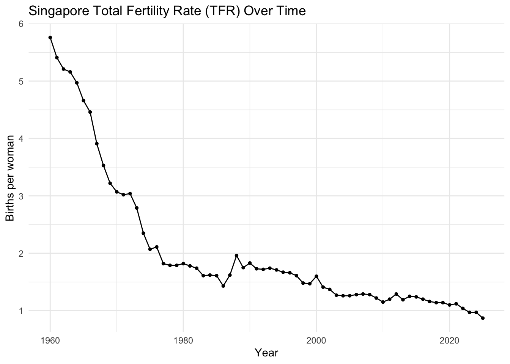
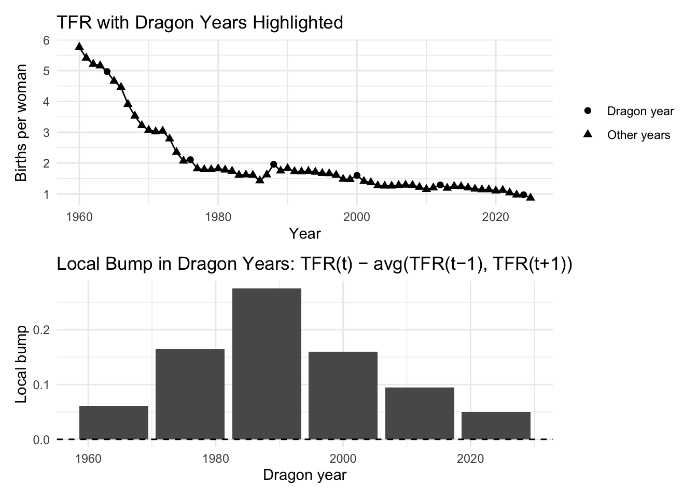
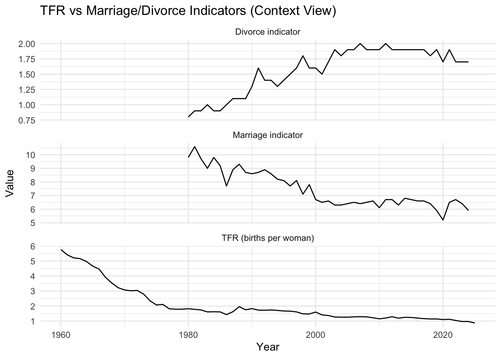
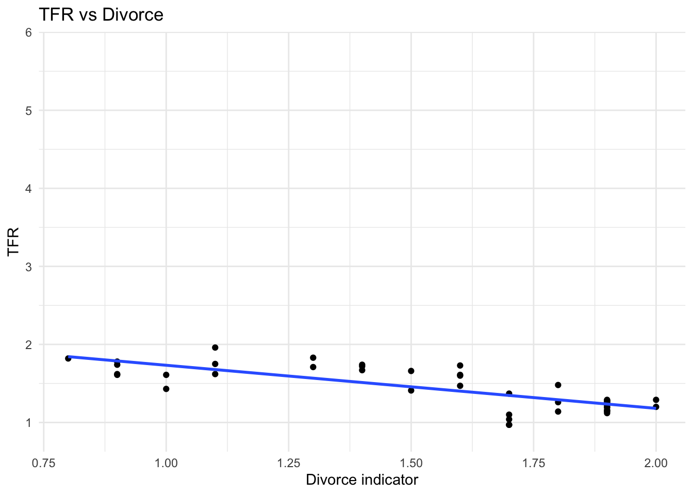
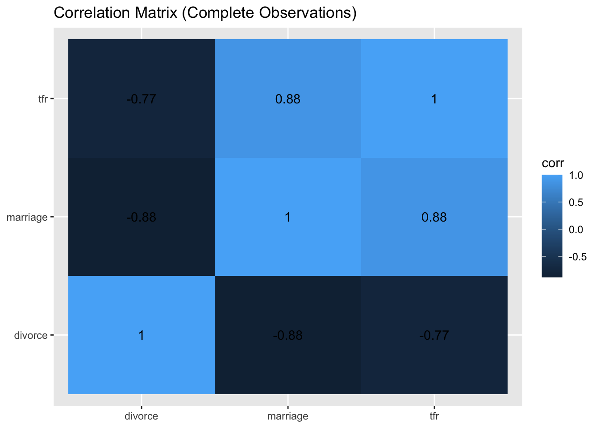
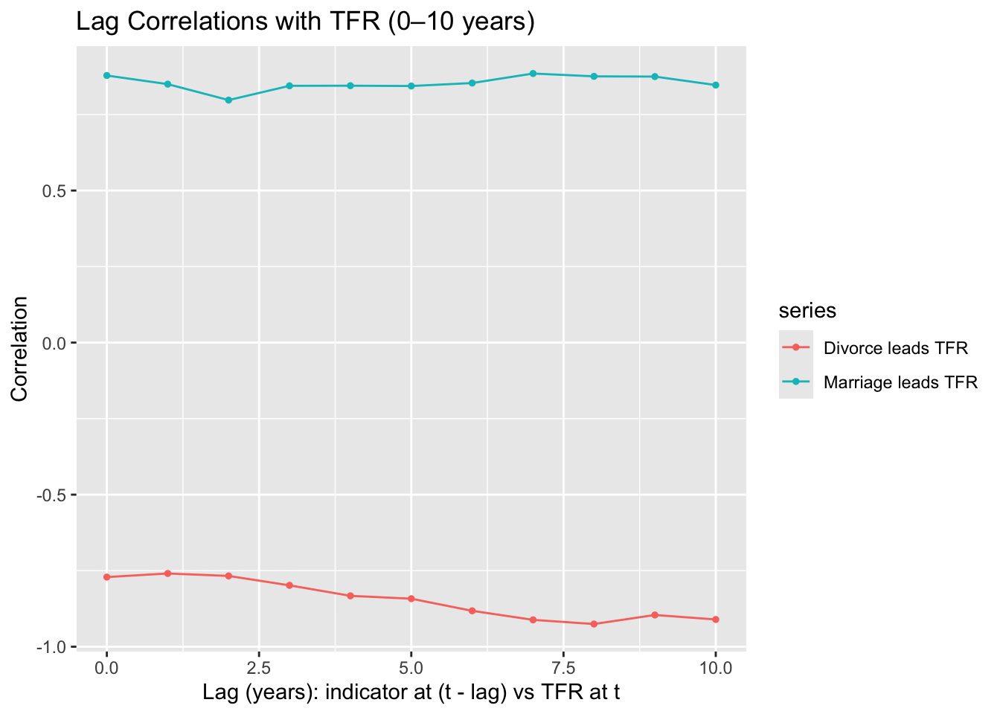

pacman::p_load(tidyverse, readxl, knitr, ggthemes, patchwork)Take-Home Exercise 2:Singapore Fertility Trends: A Visual Analytics Study
Overview
Singapore’s total fertility rate (TFR) has fallen to a historic low in recent years, raising concerns about population ageing and long-term labour force sustainability. This report was taken from CEIC, a time series dataset (fertility, marriage, divorce and population indicators) to explore: (i) how fertility has evolved over time, and (ii) whether marriage and divorce indicators are statistically associated with fertility, including possible lag effects.
Getting Started
Install and load the required R packages for data manipulation and visualisation.
Loading Data
The dataset is provided in Excel format and contains multiple time series. The worksheet includes metadata rows (e.g., source, units, summary statistics) and the actual time-series observations.
raw0 <- read_xlsx("chapthe2/data/sg fertilty population.xlsx", col_names = FALSE)
cat("Raw shape:", nrow(raw0), "rows x", ncol(raw0), "cols\n")Raw shape: 815 rows x 118 colsData Preparation
To prepare the dataset for analysis and visualisation, several cleaning steps were performed: 1. Extract the correct series names from the first row 2. Identify the valid time-series observations by parsing the first column as a date. 3. Remove metadata and summary rows, keeping only the time-series rows. 4. Convert series values into numeric format. 5. Produce two cleaned datasets: df_wide: wide format (year, date, multiple series columns) df_long: long/tidy format (year, series, value) for EDA and Shiny filtering.
# 1) Series labels on row 1 (col 2 onward)
series_labels <- raw0 %>%
slice(1) %>%
select(-1) %>%
unlist(use.names = FALSE) %>%
as.character() %>%
str_squish()
blank_idx <- which(is.na(series_labels) | series_labels == "")
if (length(blank_idx) > 0) series_labels[blank_idx] <- paste0("series_", blank_idx)
series_names <- make.unique(janitor::make_clean_names(series_labels))
series_key <- tibble(series = series_names, label = series_labels)
# 2) Drop row 1 and set names
raw1 <- raw0 %>%
slice(-1) %>%
setNames(c("time_raw", series_names))
# 3) Robust date parsing
parse_ceic_date <- function(x) {
if (inherits(x, "Date")) return(x)
if (inherits(x, "POSIXt")) return(as.Date(x))
x_chr <- str_squish(as.character(x))
dt1 <- suppressWarnings(lubridate::ymd_hms(x_chr, tz = "UTC", quiet = TRUE))
dt2 <- suppressWarnings(lubridate::ymd(x_chr, quiet = TRUE))
d_text <- as.Date(dplyr::coalesce(dt1, dt2))
num <- suppressWarnings(as.numeric(x_chr))
use_serial <- !is.na(num) & num > 10000 & num < 60000
d_serial <- as.Date(num, origin = "1899-12-30")
dplyr::if_else(use_serial, d_serial, d_text)
}
raw1 <- raw1 %>% mutate(date = parse_ceic_date(time_raw))
is_ts_row <- !is.na(raw1$date) &
lubridate::year(raw1$date) >= 1900 &
lubridate::year(raw1$date) <= 2100
stopifnot(sum(is_ts_row) > 0)
# 4) Long -> annual panel (keep latest non-missing observation per year)
df_long_clean <- raw1 %>%
filter(is_ts_row) %>%
mutate(year = lubridate::year(date)) %>%
pivot_longer(
cols = all_of(series_names),
names_to = "series",
values_to = "value_raw"
) %>%
mutate(value = readr::parse_number(as.character(value_raw))) %>%
filter(!is.na(value)) %>%
group_by(series, year) %>%
slice_max(order_by = date, n = 1, with_ties = FALSE) %>%
ungroup() %>%
arrange(series, year)
df_wide_clean <- df_long_clean %>%
select(year, series, value) %>%
pivot_wider(names_from = series, values_from = value) %>%
arrange(year)
cat("Annual panel year range:", min(df_wide_clean$year), "to", max(df_wide_clean$year), "\n")Annual panel year range: 1950 to 2025 cat("Non-missing series:", n_distinct(df_long_clean$series), "\n")Non-missing series: 117 # 5) Key series selection ONCE (robust matching)
pick_series <- function(key_tbl, primary_pattern, fallback_pattern = NULL) {
out <- key_tbl %>%
filter(str_detect(str_to_lower(label), primary_pattern)) %>%
slice(1) %>%
pull(series)
if (length(out) == 0 && !is.null(fallback_pattern)) {
out <- key_tbl %>%
filter(str_detect(str_to_lower(label), fallback_pattern)) %>%
slice(1) %>%
pull(series)
}
out
}
tfr_series <- pick_series(series_key, "^fertility rate: per female$")
mar_series <- pick_series(series_key, "crude marriage rate", "marriage")
div_series <- pick_series(series_key, "crude divorce rate", "divorce")
stopifnot(length(tfr_series) == 1, tfr_series %in% df_long_clean$series)
stopifnot(length(mar_series) == 1, mar_series %in% df_long_clean$series)
stopifnot(length(div_series) == 1, div_series %in% df_long_clean$series)
analysis_df <- df_long_clean %>%
filter(series %in% c(tfr_series, mar_series, div_series)) %>%
select(year, series, value) %>%
pivot_wider(names_from = series, values_from = value) %>%
arrange(year) %>%
transmute(
year,
tfr = .data[[tfr_series]],
marriage = .data[[mar_series]],
divorce = .data[[div_series]]
)
tfr_df <- df_long_clean %>%
filter(series == tfr_series) %>%
arrange(year)
eda2_df <- df_long_clean %>%
filter(series %in% c(tfr_series, mar_series, div_series)) %>%
left_join(series_key, by = "series") %>%
mutate(panel = case_when(
series == tfr_series ~ "TFR (births per woman)",
series == mar_series ~ "Marriage indicator",
series == div_series ~ "Divorce indicator",
TRUE ~ label
))
asfr_keys <- series_key %>%
filter(str_detect(label, "^Fertility Rate: Per 1000 Female: Age")) %>%
mutate(
age_band = str_extract(label, "\\b\\d{2}\\s*-\\s*\\d{2}"),
age_band = str_replace_all(age_band, "\\s*", "")
) %>%
arrange(age_band)
asfr_df <- df_long_clean %>%
semi_join(asfr_keys, by = "series") %>%
left_join(asfr_keys, by = "series") %>%
mutate(age_band = factor(age_band, levels = c("15-19","20-24","25-29","30-34","35-39","40-44","45-49")))
corr_df <- analysis_df %>%
select(tfr, marriage, divorce) %>%
cor(use = "complete.obs") %>%
as.data.frame() %>%
rownames_to_column("var1") %>%
pivot_longer(-var1, names_to = "var2", values_to = "corr")
lag_cor <- function(x, y, max_lag = 10) {
tibble(lag = 0:max_lag) %>%
mutate(cor = map_dbl(lag, \(k) cor(x, dplyr::lag(y, k), use = "complete.obs")))
}
lag_results <- bind_rows(
lag_cor(analysis_df$tfr, analysis_df$marriage, 10) %>% mutate(series = "Marriage leads TFR"),
lag_cor(analysis_df$tfr, analysis_df$divorce, 10) %>% mutate(series = "Divorce leads TFR")
)
# Regression objects (created once)
m0 <- lm(tfr ~ marriage + divorce, data = analysis_df)
lag_m <- 2
lag_d <- 1
analysis_lag <- analysis_df %>%
mutate(
marriage_lag = lag(marriage, lag_m),
divorce_lag = lag(divorce, lag_d)
) %>%
drop_na(marriage_lag, divorce_lag, tfr)
m_lag <- lm(tfr ~ marriage_lag + divorce_lag, data = analysis_lag)EDA: To understand long-term fertility trend by compare fertility trend shape with marriage/divorce as context
NoteEDA 1: TFR time trend

ggplot(tfr_df, aes(x = year, y = value)) +
geom_line() +
geom_point(size = 1) +
labs(
title = "Singapore Total Fertility Rate (TFR) Over Time",
x = "Year",
y = "Births per woman"
)Observation:
Singapore’s TFR shows a sustained long-run decline from the 1960s to 2025. The sharpest fall occurs from the 1960s through the late 1970s, followed by a slower downward drift with smaller fluctuations. From the mid-1970s onward, TFR remains well below the replacement level of 2.1, and the most recent values represent the lowest level in the series, consistent with the “historic low” narrative.
NoteEDA 2: Marriage & Divorce trends (context against TFR)

ggplot(eda2_df, aes(year, value)) +
geom_line() +
facet_wrap(~ panel, scales = "free_y", ncol = 1) +
labs(
title = "TFR vs Marriage/Divorce Indicators (Context View)",
x = "Year",
y = "Value"
)Observation:
TFR continues a long-run decline across the full period. In contrast, the crude divorce rate rises gradually from the 1980s to a higher plateau in the 2000s–2010s, before easing slightly in recent years. Visually, divorce and TFR do not move together; TFR falls even when divorce stabilises, suggesting fertility is driven by broader factors beyond divorce alone. The marriage indicator used here is a count-based series, so its movement is not directly comparable to TFR without converting to a rate or using a crude marriage rate series.
NoteEDA 3: Age-specific fertility

stopifnot(nrow(asfr_keys) > 0)
ggplot(asfr_df, aes(year, value, colour = age_band)) +
geom_line(linewidth = 0.9) +
labs(
title = "Age-Band Fertility Rates (Per 1,000 Females) Over Time",
x = "Year",
y = "Births per 1,000 females",
colour = "Age band"
)Observation:
Across all age bands, fertility rates decline substantially over the long run, with the steepest drop in younger ages (15–19, 20–24). Over time, the peak childbearing band shifts later: earlier decades are dominated by 25–29, but from the 2000s onward 30–34 becomes the highest and 35–39 stays relatively more persistent than younger groups. This pattern is consistent with birth postponement (fertility shifting from 20s toward 30s), even as overall fertility continues to fall.
NoteEDA 4: Scatterplots (relationship + trend line)


p1 <- ggplot(analysis_df, aes(marriage, tfr)) +
geom_point() +
geom_smooth(method = "lm", se = FALSE) +
theme_minimal() +
labs(title = "TFR vs Marriage", x = "Marriage indicator", y = "TFR")
p2 <- ggplot(analysis_df, aes(divorce, tfr)) +
geom_point() +
geom_smooth(method = "lm", se = FALSE) +
theme_minimal() +
labs(title = "TFR vs Divorce", x = "Divorce indicator", y = "TFR")
p1
p2Observation:
xx
NoteEDA 5: Correlation heatmap

ggplot(corr_df, aes(var1, var2, fill = corr)) +
geom_tile() +
geom_text(aes(label = round(corr, 2))) +
labs(
title = "Correlation Matrix (Complete Observations)",
x = NULL, y = NULL
)Observation:
xx
Analytical Tasks: Lead–Lag Correlation
NoteAnalysis 1: Correlation + Time Lag

ggplot(lag_results, aes(lag, cor, colour = series)) +
geom_line() +
geom_point(size = 1) +
labs(
title = "Lag Correlations with TFR (0–10 years)",
x = "Lag (years): indicator at (t - lag) vs TFR at t",
y = "Correlation"
)Observation:
Using the overlapping years where TFR, marriage, and divorce are all available (complete cases), the same-year correlations show strong associations: TFR is strongly and positively related to marriage (r ≈ 0.878) and strongly and negatively related to divorce (r ≈ −0.771). Marriage and divorce are also very strongly negatively correlated with each other (r ≈ −0.884), which signals substantial collinearity between the two predictors and suggests they may capture overlapping long-run demographic patterns rather than independent effects. From the lag screening (0–10 years), the marriage–TFR correlation remains consistently high across many lags (roughly in the 0.80–0.89 range) without a clear single “best” peak, while the divorce–TFR correlation remains consistently negative across lags. This persistence across multiple lags suggests the relationships are largely driven by shared long-term trends and co-movement, rather than a sharp lead–lag timing effect concentrated at one specific lag year.
NoteAnalysis 2: Regression Analysis
Call:
lm(formula = tfr ~ marriage + divorce, data = analysis_df)
Residuals:
Min 1Q Median 3Q Max
-0.264685 -0.080468 -0.007308 0.083412 0.312538
Coefficients:
Estimate Std. Error t value Pr(>|t|)
(Intercept) 0.04179 0.40245 0.104 0.918
marriage 0.18175 0.03187 5.703 1.06e-06 ***
divorce 0.01748 0.11300 0.155 0.878
---
Signif. codes: 0 '***' 0.001 '**' 0.01 '*' 0.05 '.' 0.1 ' ' 1
Residual standard error: 0.1303 on 42 degrees of freedom
(21 observations deleted due to missingness)
Multiple R-squared: 0.7715, Adjusted R-squared: 0.7606
F-statistic: 70.89 on 2 and 42 DF, p-value: 3.449e-14
Call:
lm(formula = tfr ~ marriage_lag + divorce_lag, data = analysis_lag)
Residuals:
Min 1Q Median 3Q Max
-0.36339 -0.07225 0.01540 0.09699 0.48107
Coefficients:
Estimate Std. Error t value Pr(>|t|)
(Intercept) 0.57671 0.56151 1.027 0.31041
marriage_lag 0.13412 0.04333 3.095 0.00354 **
divorce_lag -0.11864 0.15920 -0.745 0.46036
---
Signif. codes: 0 '***' 0.001 '**' 0.01 '*' 0.05 '.' 0.1 ' ' 1
Residual standard error: 0.1647 on 41 degrees of freedom
Multiple R-squared: 0.6408, Adjusted R-squared: 0.6233
F-statistic: 36.57 on 2 and 41 DF, p-value: 7.666e-10summary(m0)
summary(m_lag)Observation:
In the contemporaneous OLS model (tfr ~ marriage + divorce), the model explains a substantial share of TFR variation (R² ≈ 0.77). Marriage is a statistically significant positive predictor (β ≈ +0.182, p < 0.001), indicating that higher marriage levels are associated with higher fertility in the same year. Divorce, however, is not statistically significant (p ≈ 0.878) once marriage is included, which is consistent with the high correlation between marriage and divorce observed earlier—divorce adds little incremental explanatory power beyond what marriage already captures, likely due to multicollinearity. In the lagged model (tfr ~ marriage_lag + divorce_lag), marriage remains statistically significant (β ≈ +0.134, p ≈ 0.0035), while divorce remains not significant (p ≈ 0.46). The overall fit is weaker than the same-year model (R² ≈ 0.64 vs 0.77), suggesting that, for this dataset, contemporaneous marriage measures align more strongly with annual TFR movements than the lag specification used. Overall, the results support a robust association between marriage and fertility, while the divorce indicator does not show an independent association after accounting for marriage in the regression framework.